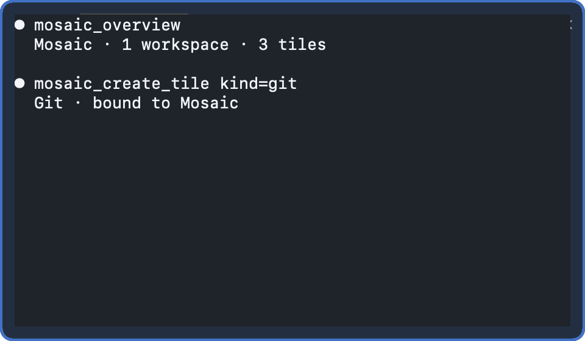
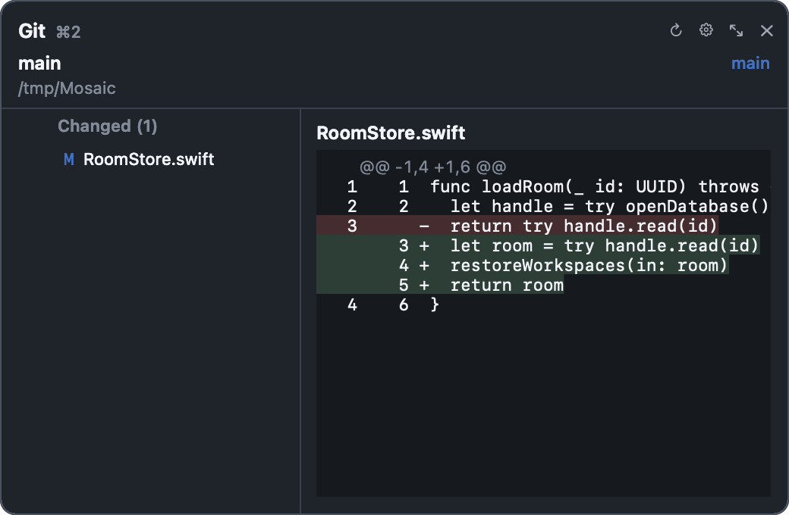
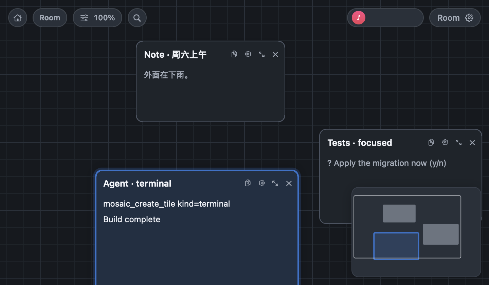
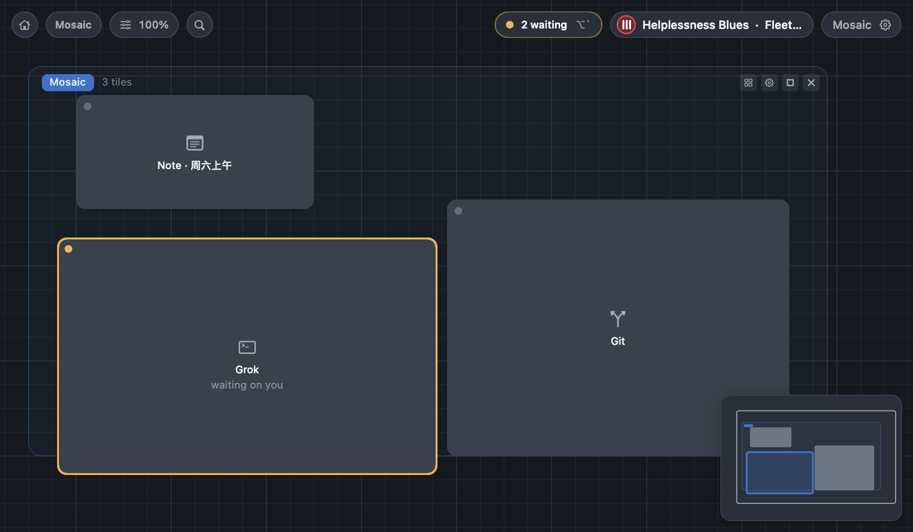
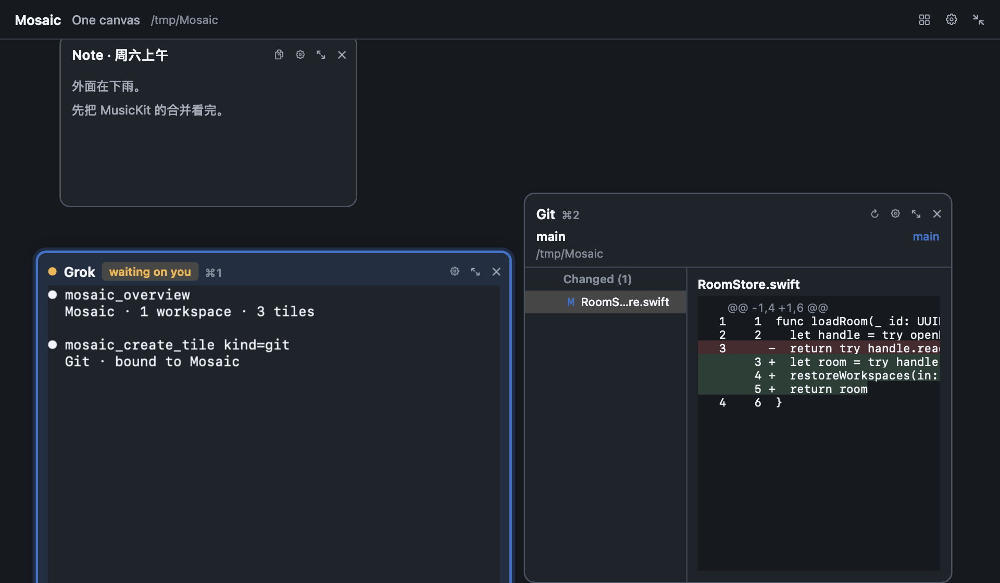
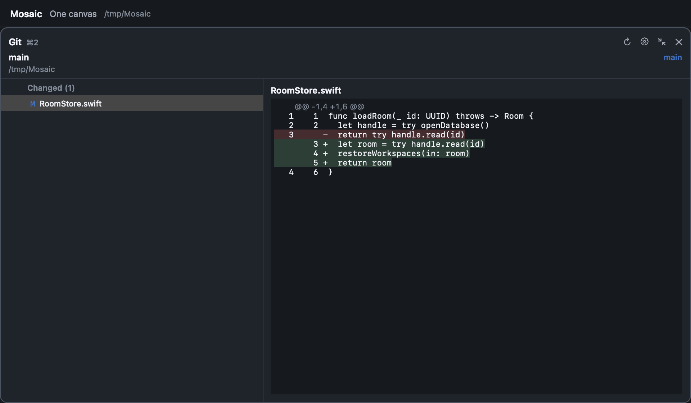
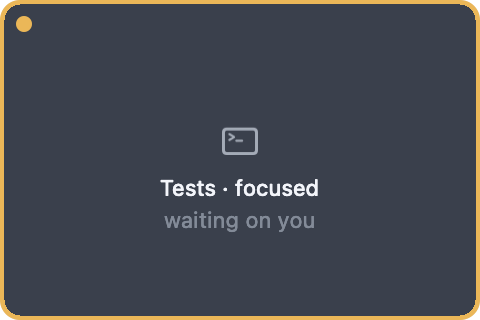
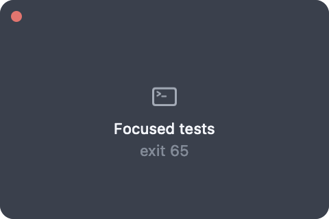

Room · 房间
a whole canvas of its own
一整块自己的画布，通常对应一个项目。切换房间会先把当前这块写回磁盘，再载入另一块。
One window for every surface you work on.
终端、agent、笔记、网页、别的应用的窗口，全部活在同一块无限画布上。你摆放它们，agent 通过 MCP 与你改动同一块画布。
Terminals, agents, notes, web pages and other apps' windows live on one infinite canvas — and agents edit that same canvas through MCP.



Overview, workspace, or one tile. You never leave the canvas.



You arrange things once, instead of alt-tabbing forever.
每个 tile 都是真实的东西：PTY 终端、agent、笔记、便签、网页、git、文件，甚至别的应用的窗口。它们不是标签页，是画布上有位置、有大小、有邻居的对象。
一整块自己的画布，通常对应一个项目。切换房间会先把当前这块写回磁盘，再载入另一块。
画布上圈出来的一块区域，可以绑定项目目录、命名、上色、自动排布。归属由几何决定——拖进去就是它的。
最小的单位。⌘ 加数字给常用 tile 一个相机快捷键；双击最大化，Esc 回到画布。
Who is waiting on me, right now.
组织层回答「东西放在哪」，注意力层回答「现在该看哪」。状态只从可靠信号来：进程退出码、前台进程组、终端铃、agent 通过 MCP 自报。
Status never touches the database and never enters undo. Restart the app and everything is quiet again — a badge that survives a restart is lying to you.
succeeded 与 failed 会衰减：focus 一下，或者五分钟后，回到安静。


Agents edit the canvas you are looking at.
应用自己就是 MCP 服务器，监听一个 Unix socket；agent 通过随附的 stdio shim 接进来。工具刻意做得小、语义化、面向数据：它们传递意图，不传递鼠标事件。
每一次改动都走和你点菜单相同的那条 reducer——立刻出现在屏幕上，⌘Z 一样能撤回。
Mosaic 需要开着；shim 不会替你启动它。
mosaic_overview房间与工作区的树，带实时 tile 计数mosaic_create_tile新建任意种类的 tile，吸附进布局mosaic_focus_tile把用户的相机移到某个 tile 上mosaic_present用一个 tile 或工作区填满窗口mosaic_set_tile_statusagent 自报：等你 / 完成 / 失败mosaic_undo · redo走的是 ⌘Z 那条历史每个终端 tile 是一条真的 PTY。会话跟着 tile 走：换房间、关掉视图都不断线，删掉 tile 才结束。
没有账号，没有同步服务。房间、工作区、笔记都在你自己机器上的一个 SQLite 文件里。
给应用绑一张专辑或歌单。配乐属于应用，不属于房间——换房间不换歌。
不是套壳网页。签名、公证、直接下载安装；只在你把 tile 指向某个窗口时才申请录屏权限。
Move every surface into one window.
macOS 15 或更高 · Apple Silicon · 已签名并公证
Requires macOS 15+. Signed and notarized; no account, no sync.